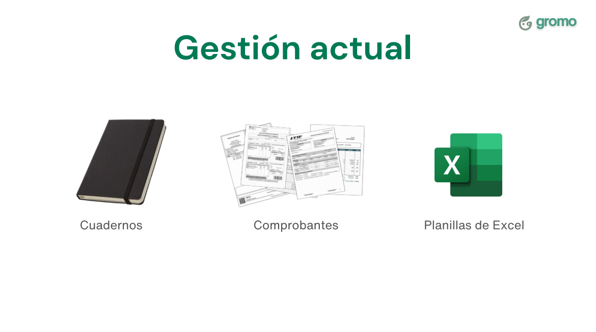
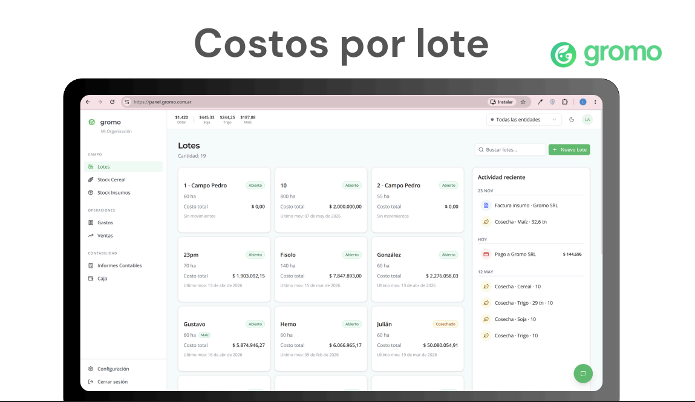
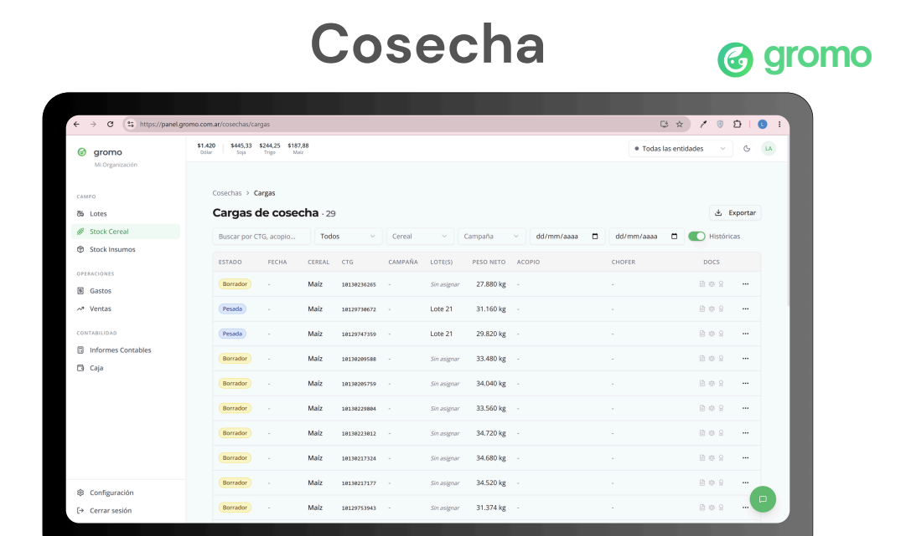

Innovación Tecnológica con Gromo
Digitalizamos y simplificamos la gestión agropecuaria para que tengas el control total de tu campo en la palma de tu mano.
La gestión actual quedó en el pasado
Dejá atrás los cuadernos, los comprobantes en papel que se pierden y las planillas de Excel desactualizadas. Es hora de dar un salto de innovación.

Carga de datos fácil por WhatsApp
Nuestra integración exclusiva con Gromo te permite registrar las operaciones de tu campo desde cualquier lugar, enviando un simple mensaje. El asistente inteligente procesa la información al instante.
- Envío de fotos de tickets de balanza y carga automática de datos.
- Registro de certificados electrónicos (AFIP) con lectura de códigos.
- Asignación inmediata de la cosecha a su lote correspondiente.
- Sin necesidad de instalar aplicaciones complejas ni capacitaciones extensas.


Control exacto de Costos por Lote
Visualizá la rentabilidad real de cada porción de tu tierra. Gromo centraliza los gastos y los ingresos, brindándote un panel de control claro y detallado para la toma de decisiones.
- Métricas de costo total actualizadas en tiempo real.
- Registro de actividad reciente: compras de insumos, pagos y más.
- Estado de cada lote y stock de cereales unificado.
- Visión clara del margen bruto y neto por campaña.

Trazabilidad total de tu Cosecha
Monitoreá cada camión que sale de tu campo. El panel de Cosecha te da tranquilidad y transparencia, agrupando toda la información de fletes y acopios en un solo lugar.
- Listado completo de cargas con peso neto y cereal.
- Trazabilidad por número de CTG.
- Estado de la documentación respaldatoria.
- Filtros avanzados por campaña, lote, acopio o fechas.

Gestión inteligente de Stock
Llevá un inventario preciso de todos tus insumos. El panel de Stock te permite conocer la disponibilidad real de tus productos, su valorización y los movimientos pendientes con total claridad.
- Control detallado de litros, kilos y unidades disponibles.
- Valorización automática del inventario total.
- Seguimiento de remitos y movimientos pendientes.
- Buscador rápido para encontrar cualquier insumo al instante.